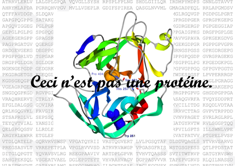
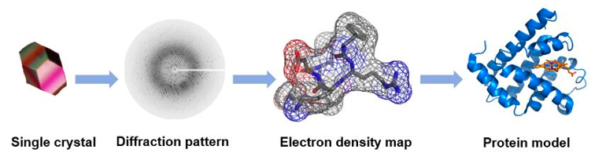
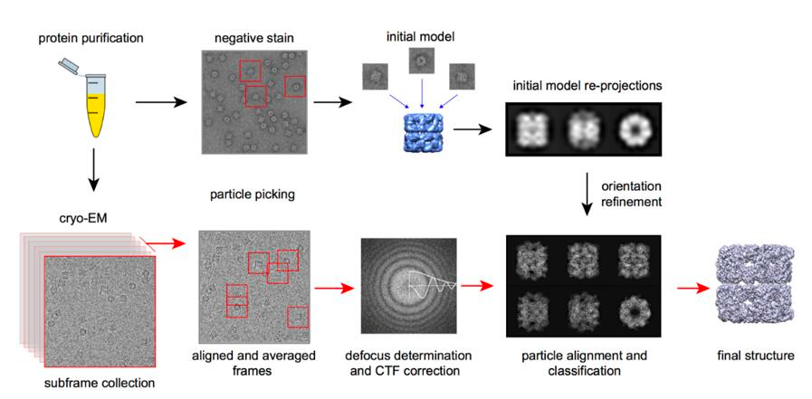
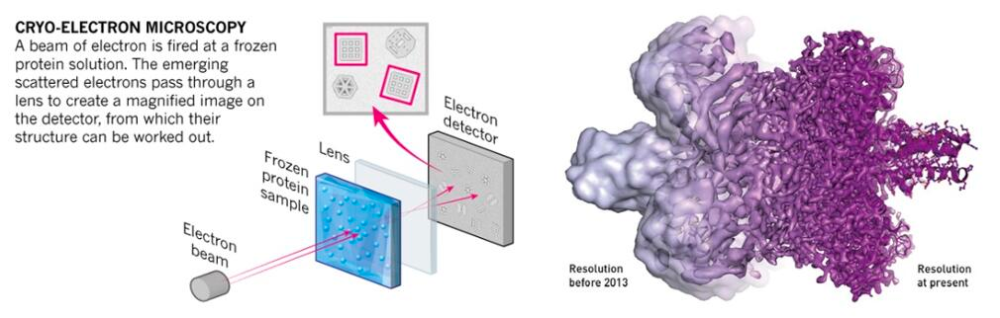
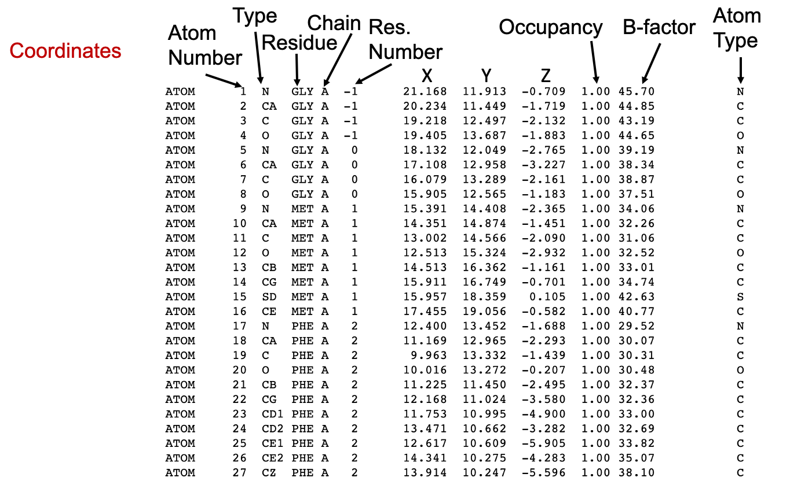

Protein Structures
1 Obtaining and working with protein structures

The surrealist Belgian painter René Magritte created a collection of surrealistic paintings entitled La trahison des images (1928–1929). The most renowned of those paintings show a smoking pipe and the following caption underneath: “Ceci n’est pas une pipe” (This is not a pipe). Yes, indeed! It is actually the painting of a pipe.
A picture of a protein, or a computer file containing the coordinates of a protein structure, is not a protein. It is a representation of ONE possible structure of that protein.
Even experimentally determined structures have two major limitations that we should always keep in mind: (1) they are a fixed structure (except RMN-based) whereas proteins in vivo are flexible and dynamic and (2) they are subject to experimental error and they often contain regions of low confidence (see below Section 3). Moreover, even experimentally obtained macromolecular structures are to some extent models, with a variable ratio between experimental data and computational predictions to match the experimental data (X-ray diffraction, cryo-EM density maps, NMR, SAXS, FRET…) with previously known structures or models. Of course, this does not mean that protein structures are useless, they can be very useful, but we must be aware of both the limitations and the applications.
2 Experimental determination of protein structures
The structure helps to understand the molecular mechanism of protein function at a higher level of detail. The 3D representation can help orient different domains/motifs/residues of interest. This can be critical for understanding population or pathogenic variants, drug design, and protein engineering. Moreover, the structures can also help in predicting protein function and evolution because they are more conserved than sequence, i.e., protein structure space is smaller than sequence space. However, obtaining detailed and reliable structural data can be technically difficult and time consuming and as we will see, protein structure modeling can often be a good complement or alternative. Experimentally obtained structures usually rely on three alternative techniques, X-ray crystallography, nuclear magnetic resonance (RMN), or electron cryomicroscopy (CryoEM).
2.1 X-Ray crystallography or single crystal X-ray diffraction
X-Ray crystallography or single-crystal X-ray diffraction, is a method for determining the atomic structure of molecules in regular, crystalline structures. It requires the generation of a crystal of the molecule of interest, which is then mounted on a goniometer and illuminated or irradiated with a focused beam of X-rays. The diffraction pattern of the X-rays on the other side of the crystal allows determination of the positions of the atoms, as well as their chemical bonds, their crystallographic disorder, and various other information. However, the link between the diffraction pattern and the electron density is not trivial and requires some complex maths, called Fourier transforms.

X-ray diffraction is a powerful method that allows obtaining high-resolution atomic-level structures of soluble or membrane proteins, either as apoenzymes or as holoenzymes bound to a substrate, cofactor or drugs. However, the sample must be crystallizable (i.e., homogeneous), which requires a considerable amount of very pure protein. Another disadvantage of X-ray structures is that, as mentioned earlier, you only get one (or very few) static forms of the protein and the location of hydrogen atoms cannot be determined by conventional diffraction methods —the fact that they have only one electron makes them very hard to detect with X-rays accurately because X-rays scatter at the electron density. They can be predicted, but that still hinders some chemical analysis.
2.2 Nuclear Magnetic Resonance
All atomic nuclei are charged, fast spinning particles, which gave rise to resonance frequencies that are different for each atom. Therefore, if we apply a magnetic field we can obtain an electromagnetic signal with a characteristic frequency of the magnetic field at the nucleus. This is the basis of nuclear magnetic resonance (NMR).
We should also remember that the motion of the nucleus is not isolated and it interacts with the surrounding atoms both intra- and intermolecularly. Nuclear magnetic resonance spectroscopy can thus provide structural information about a particular molecule. Taking a protein as an example, its secondary structures, such as α-helix, β-sheet or turn, reflect the different arrangement of the main chain atoms of protein molecules in three dimensions. The spacing of the atomic nuclei in the different secondary structures, the interaction between nuclei, and the dynamic characteristics of polypeptide segments all directly reflect the three-dimensional structure of proteins. These nuclear features all contribute to spectroscopic behaviors of the analyzed sample, thus providing characteristic NMR signals. Interpretation of these signals by computer-aided methods leads to deciphering of the three-dimensional structure.

The most important feature of the NMR method is that the three-dimensional structure of macromolecules in the natural state can be measured directly in solution, and NMR may provide unique information about dynamics and intermolecular interactions. The resolution of the macromolecular three-dimensional structure can be as low as sub nanometer. However, the NMR spectrum of biomolecules with large molecular weight is very complicated and difficult to interpret, thereby limiting the application of NMR in analyzing large biomolecules, often below 20-30 kDa (see Figure 4). Additionally, this technique requires relatively large amounts of pure samples (on the order of several mg) to achieve a reasonable signal to noise level.
2.3 Electron cryomicroscopy
The essential mechanism of Cryo-EM is the same of any electron microscopy method, i. e., electron scattering. Samples are prepared through cryopreservation prior to analysis. The, a source electrons is used as a light source to measure the sample. After the electron beam passes through the sample, a complex lens system converts the scattered signal into a magnified image recorded on the detector. A key subsequent step is signal processing, that transform thousands of images of the particles in any orientation into a three-dimensional structure of the sample.

The use of electron microscopy methods for structural biology was traditionally limited to very large macromolecular complexes, like viral capsids, and only recently it could be used for smaller particles (see Figure 4). The number of protein structures being determined by cryo-electron microscopy is growing at an explosive rate in the last 5-10 years. This is thanks to several technical improvements in the technique, spanning sample preparation, analysis and processing that allow obtaining pictures at the atomic level (Callaway 2020). This advances were acknowledged by the 2017 Nobel Prize in Chemistry to Jacques Dubochet, Joachim Frank and Richard Henderson.

Tip
Check the already classic article by Egelman (2016) for more a detailed info. And here for a great outreaching article after the Nobel Prize.
CryoEM is widely use nowadays because, particularly for large molecular complexes or viral particles. Structures can be generated quickly, as it does not require a high amount of protein and it can generate good data even in the presence of impurities. However, new generation microscopes are only affordable by large institutions and small particles can have a high level of noise. Moreover, processing a large amount of images can be limiting to obtain high-quality structures.
3 Structural quality assurance
As pointed out at the beginning of this section, any structure, regardless of its origin or method of determination, is subject to error. Structures determined experimentally are actually models that were constructed to match with the experimental data. The quality of the original data and the precision with which the experiments were performed determine the reliability of the structural results. As in any other scientific discipline, experiments performed independently can lead to related models of the same molecule, but there are almost always differences; nevertheless, both can be good models.
Check the detailed documentation about PDB validation report here.
3.1 Global parameters in experimentally-based structures
There are a number of different parameters that help us understand the quality and reliability of a structure. First, the resolution is a good indicator of the level of detail of the structure, as it can greatly affect affect how the experimental data are modeled.

Embedded reproduction of the Figure 7 with Mol*, which allow you to explore the structures.
Another important parameter is the R-factor, which is the difference between the structure factors calculated from the model and those obtained from the experimental data. That is, the R-factor is the deviation between the calculated diffraction pattern of the model and the original experimental diffraction pattern. Typically, good structures with a resolution of 1-3 Å, have an R-factor of 0.2 (i.e., 20% of deviation). However, it should be noted that this factor is usually reduced after iterative refinement, which downplays its use as an indicator of reliability. A more reliable factor is the Rfree factor. This is less susceptible to manipulation during refinement, as it is based on only a small portion of the experimental data (5-10%) that is not used during the refinement phase.
A more intuitive, but only qualitative, way to understand the precision of the coordinates of a given atom is the B-factor. The temperature value or B-factor correlates with the position errors, although its mathematical definition is more complex. Normal values for a B-factor are in the range of 14-30, while values above 30 usually indicate that the atom is in a flexible or disordered region, and atoms with a B-factor above 40 are often ruled out as too unreliable.
The root-mean-squared deviation (RMSD, see Structure alignment section) is a traditional estimator of the quality of NMR-solved structures. Regions with high RMSD values are those that are less defined by data. However, it should also be noted that this parameter can be also misleading, as it is highly dependent on the procedure used to generate and select the data that is submitted to the PDB. An experimentalist could reduce the RMSD by selecting the “best” few structures for deposition from a much larger draft. Note that the RMSD has many other applications, like comparing different structures or models from the same or related sequences.
In recent years, with the increase of quantity and quality of EM structures, new parameters have also been proposed. One of them, the Q-factor was recently introduced for validation of 3DEM/PDB structures. Briefly, the Q-factor score calculates the resolvability of atoms by measuring the similarity of the map values around each atom relative to a Gaussian-like function for a well resolved atom. A Q score of 1 means that the similarity is perfect, while a value close to 0 indicates low similarity. If the atom is not well placed in the map, a negative Q value can be given. Therefore, Q-factor values in the reports range from -1 to +1.
3.2 Stereochemical parameters
Since all structural models contain some degree of error and some of the global modeling parameters may be controversial, we can analyze the geometry, stereochemistry, and other structural properties of the model to evaluate structural models. These parameters compare a given structure to what is already known about that type of molecule based on our knowledge from high-resolution structures. This means that the structures in the current structure space define what is “normal” in a protein structure. The advantage of these analyses and derived parameters is that they do not take into account the process that leads to the model, only the final product and its reliability. The main disadvantage is that the current structure space is focused on proteins with known function and of biomedical or biotechnological interest.
One of the most common and powerful methods for assessing the stereochemistry of a protein is the Ramachandran plot, which was defined in 1963 and is still in use.
Another widely used analysis (available for all PDB structures) is the side chain torsion angles, usually measured as Side chain outliers. As described in the Introduction, the amino acid side chains also have some preferred conformations. Like the Ramachandran plot, the plot of the χ1-χ2 torsion angles can indicate problems with a protein model if the angle values are outside of the high density values.
Bad contact or clashes indicate a poor model. It is obvious that two atoms cannot be in the same (or a very close) location. We can define this as a situation where two unbonded atoms have a center-to-center distance smaller than the sum of their van der Walls radii.
4 Protein structure display
4.1 Protein structure file formats
Experimental structural data from different methods are stored in different file formats. For instance, raw crystallographic data are usually stored as *.ccp4 files, but Cryo-EM or X-ray density maps can be stored in *.mrc or *.mtz files. Other complex file formats, such as the Extensible Markup Language *.xml, provide a framework for structure complex information and documents like protein structures.
Along with the establishment of the Protein Data Bank, a simple and standardized format was developed. The Brookhaven or PDB format consists of line records in a fixed format describing atomic coordinates, chemical and biochemical features, experimental details of the structure determination, and some structural features such as secondary structure assignments, hydrogen bonding, or active sites. The current version is named PDBx/mmCIF) also incorporates the expanded crystallographic information file format (mmCIF), which allows the representation of large structures, complex chemistry, and new and hybrid experimental methods. Thus a *.pdb and *.cif files can be considered as identical files.
Check PDB-101 course about PDBx/mmCIF format at PDB RCSB site here.

Occupancy and B-factor
Except for the repetition of the atom type in the rightmost column, the last columns in the PDB file are the Occupancy and the temperature factor or the B-factor.
Macromolecular crystals consist of many individual molecules packed in a symmetrical arrangement. In some crystals there are slight differences between the individua molecules. For instance, a sidechain on the surface may wag back and forth between several conformations, or a substrate may bind in two orientations at an active site, or a metal ion may be detected as bound to only a few of the molecules. When researchers build the atomic model of these portions, they can use the occupancy to estimate the amount of each conformation observed in the crystal. Therefore, by definition, the sum of occupancy values for each atom must be 1. Usually, we see a single record for an atom, with an occupancy value of 1, indicating that the atom is found in all of the molecules in the same place in the crystal. However, if a metal ion binds to only half of the molecules in the crystal, the researcher sees a faint image of the ion in the electron density map and can assign an occupancy of 0.5 for this atom in the PDB structure file. For each atom, two (or more) atom records are included with occupancies such as 0.5 and 0.5, or 0.4 and 0.6, or other fractions of occupancies that sum to a total of 1.
On the other hand, the temperature value or B-factor is a measure of our confidence in the location of individual atoms, as described above (Section 3). If you find an atom with a high temperature factor on the surface of a protein, keep in mind that this atom is likely to be moving around a lot and that the coordinates given in the PDB file are only a possible snapshot of its location. Thus, an atom dataset with an occupancy < 1 may have a low B-factor if that position is safe.
As you can imagine, this column is also used by computationally derived models to indicate a confidence value that can be parsed for diverse purposes, including structure coloring.
4.2 Biological macromolecules display applications
PyMOL
PyMOL is a very powerful molecular visualization system written originally by Warren DeLano. It was released in 2000 and soon became very popular. It’s currently commercialized under License by Schrödinger but a free license for teaching can be requested. Also, open source code is available on GitHub that can be installed on Linux or MAC. More info on Wikipedia. You can also check this quick Reference guide
PyMOL allows working with different structures representation, but also with raw experimental data in different formats.
PyMOL is written in Python and can be used with interactive menus and also with command line. There are a lot of resources that can help you with PyMOL, like a Documentation Reference Wiki or a community-supported PyMOLWiki. Moreover, it allows the implementation of new functionalities as plugins, like PyMod or DockingPie, among others. PyMod (Janson and Paiardini 2021) is designed to act as simple and intuitive interface between PyMOL and several bioinformatics tools (i.e., PSI-BLAST, Clustal Omega, HMMER, MUSCLE, CAMPO, PSIPRED, and MODELLER). Starting from the amino acid sequence of the target protein, PyMod is designed to carry out the main steps of the homology modeling process (that is, template searching, target-template sequence alignment and model building) in order to build a 3D atomic model of a target protein (or protein complex). The integration with PyMOL facilitates a detailed analysis of the modeling process.
Finally, as any Python-based program, it can be used within Jupyter notebooks (see https://www.computer.org/csdl/magazine/cs/2021/02/09354947/1rgCkrAJCko).
UCSF ChimeraX
ChimeraX (Pettersen et al. 2021) is a fully open source software, developed by the UCSF as a renovated version of the former Chimera software, with versions for Linux, MacOS, and Windows. It aims to be a comprehensive structural biology tool, but it is more widely known for its capacities for EM maps. As any other open source software, it has gained new and exciting capacities in the last years, like Virtual Reality capabilities or Alphafold2 modeling.
There is an excellent ChimeraX User Guide, with examples at the RBVI@UCSF site here.
Molecular structures on your website: LiteMol and others
LiteMol Viewer is a powerful HTML5 web application for 3D visualization of molecules and other related data. It is used in a web browser, eliminating the need for external software and also allowing the integration with third-party sites as an embedded plugin. More information about LiteMol can be found on Sehnal et al. (2017), the wiki, or YouTube tutorials.
The same philosophy applies to other open-source viewers that were developed later and are now more widely used, like NGL Viewer and Mol* Sehnal et al. (2021), used in RCSB-PDB and PDBe sites for 3D visualization of structures. With Mol* you can save your work session in molj (without the actual structures) or molx (with embedded structures) formats, as in the Figure 8 above.
Mol* can be very easily integrated in other third party services and in your own website. For instance, it has a Quarto extension, which prompted me to use it on this site.
Other applications that you may know, hear about or came into but are now discontinued are:
SwissPDBViewer (aka DeepView), developed to work with SWISS-MODEL homology modeling app, is an application that provides a user-friendly interface allowing to analyze several proteins at the same time. It has currently fallen in disuse as the last version (4.1) is only a 32 bits application.
RasMol and OpenRasMol were developed initially in 1992 and its last release was in 2009. It was a pioneer as a simple molecular display open-source application, but it is outdated nowadays.
5 PyMOL Practice
Our PyMOL Practice has two parts.
5.1 PART A: A 10-steps self-guided practice
This is a Evernote note that you can consult online and also copy into your Evenote account if you wish.
5.2 PART B: PyMOL Challenge
Make a ready-to-publish picture of your favorite protein. As a suggestion, you can reproduce the top panels in the Figure 1B of Gao et al. (2020), but any structure involving more than one domain and/or with a substrate/cofactor molecule can be a good challenge.